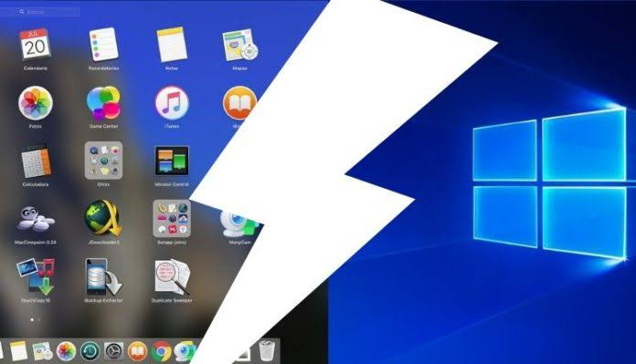

What's The Operating System?
The operating system is the program which is responsible for the execution of application programs and act as an interface between user of the computer and the computer hardware
Operating System Functions
The Operating system performs three main functions; these functions are making the computer more convenient to use, allowing the computer system resources to be used efficiently and finally, permitting the effective development, testing and introduction of new system functions without interfering with the system.
Types of operating systems
1. Operating Systems For PC
Operating systems usually come pre-loaded on any computer you buy. Most people use the operating system that comes with their computer, but it's possible to upgrade or even change operating systems. The three most common operating systems for personal computers are Microsoft Windows, macOS, and Linux.
2. Operating Systems For Mobile Phones

The operating systems we've been talking about so far were designed to run on desktop and laptop computers. Mobile devices such as phones, tablet computers, and MP3 players are different from desktop and laptop computers, so they run operating systems that are designed specifically for mobile devices. Examples of mobile operating systems include Apple iOS and Google Android.